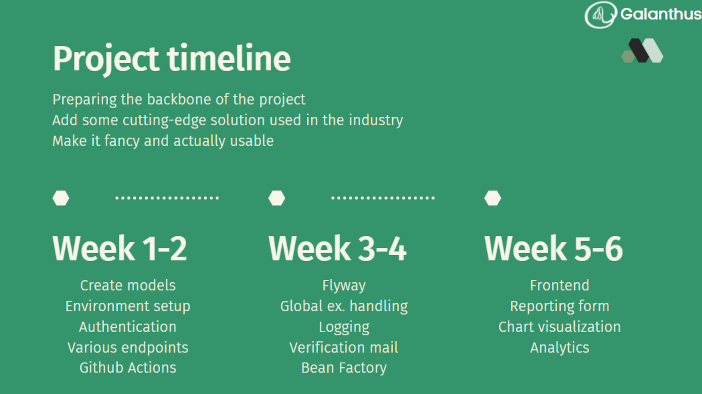

Baffi Bálint
my name is, and I am in the job seeking period after having cleared the Junior Software Developer course at Green Fox Academy specialized in Java backend development. This is my personal webpage aiming to introduce myself and showcase my skills by presenting my individual work.
- - -
Backend project
During the last six weeks of the course we were working on a project in a team of 3. Our project was to create a web application that lets its users send feedback to each other and analyze their data.
To present the used technologies and app features, let me paste two snippets from our final presentation

Among the three of us it was my particular job to do:
- Set up environment (dotenv)
- Add authentication (Spring security)
- Configure GitHub Actions
- Implement global exception handling
- Implement user registration verification mail feature
- Create bean factory to centralize object initialization for tests
- Create the reporting form
- Implement a Google Chart
- Some endpoints and many tests...
My individual project is having similar features and currently under construction. You can check its status in my GreenBay repository.
- - -
About the course
I started Green Fox Academy backend developer course in March 2022 and I successfully cleared my exam in August. During these four and a half months I acquried a large variety of hard and soft skills that are indispensable for a software developer. Regarding the technical side, the technologies I used are shown below on the certificate and figured in the above project description.
However, it was not only my programming knowledge that I broadened during this course. Over the last 6 weeks we were working on projects in teams of 3-4 developers. There our mentors tried to simulate a real working environment as much as possible. Below are my main takeaways from this very illuminating period:
- I got the feeling of working together with other developers. We were issuing pull requests, reviewed the others' code, competing with each other to finish earlier so that it is not us who have to solve merge conflicts...:)
- We split the duration of the project into six sprints. We had to make a decision every Monday which and how much issues we claim to finish until end of the week. It was a good experience to see that usually issues were finished 1-2 days after the first version was ready for peer review.
- Tests... Honestly speaking, I did not feel exactly why we need tests until we started this project. But I was stunned to see how fast it grew and became impossible to tell whether everything works fine or not. Now I like writing tests and I make sure that I write them immediately after I finished coding the logic - the test left for next day or week will probably never be written...
- Finally, I learnt a lot about myself. As I described in the ABOUT section, I partially chose this careerpath to get a better opportunity for a proper work-life balance. However, I soon experienced that this kind of trade can be pursued essentially 24/7 that certainly cannot be called as "proper work-life balance". It took me a while to experience how much I can take depending on my present condition, how many short nights I can make before I must sleep properly, in which phase of the day I am effective and not, how much I can code without losing my interest etc.
- - -
Algorithmic exercises
Algoritmic exercises are significant and indispensable part of my daily routine as a programmer. They keep my routine of Java "in my hand" and offer a great opportunity for personal development. I especially love the site CodeWars, there I was already able to learn a lot (about Java streams for example) checking out other programmers' solutions. I find especially one-liner stream and regex solutions really inspiring.
While earlier I completed this tasks the way I could on my own and by heart and as fast as possible (preparing for Green Fox Academy final exam entry), recently I think about what I need and research it. This way I gradually improve myself for example regarding streams and regex. For the whole list of my solutions check out my GitHub repository. Below is one of my recent (2022/09/05) solution, one of my first one-liners. This code returns a boolean depending on whether array b contains precisely the squares of a in voluntary order.
- - -
Programming basics
I wrote these programs at the beginning of the training. Although they certainly do not reflect the way I code today after having cleared the bootcamp and many coding challenges on Hackerrank and Codewars I still find it important to show these pieces of work because my genuine passion for programming is very well expressed by them.
OOP
Snake
I created a multiplayer implementation of the popular game. It is fun to play it so that it occupied my son for half an hour - I can call it my first not self-purposed code. At that time it was my most object-oriented code.
UMLALgorithms, structures
Create a random map for a game

Walls are represented by "3"-s and available areas by zeros in the above matrix. Task: put down x walls on an mxn map randomly in such way that any available field can be reached from any.
code of recursive algorithm, the cycle splitting it up and the main code itselfSierpinski carpet

After landing a recursion code successfully in the minesweeper game I felt it was high time to create a fractal. It ended up pretty well packed.
kódMinesweeper

.png)
Although it seemed to be easy from OOP point of view, while coding the expansion of zero fields I managed to implement such delicacies as four times nested iteration, XOR operator, recursion.
code about above delicaciesTic-tac-toe
Computer finds moves based on following priorities:
- 1) Wins in one move
- 2) Prevents human to win in one move
- 3) Select a random move.
Disclaimer: I coded this the very evening we learned about OOP concept. Of course it could be done in a much more decent way, but I leave it here as a good memory :)
code